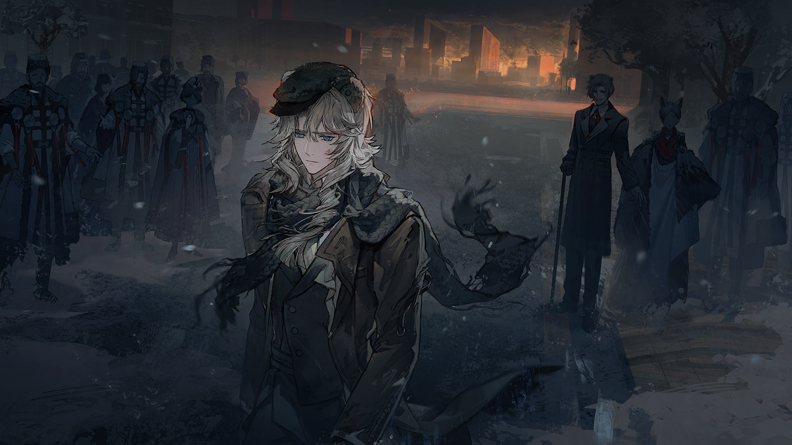
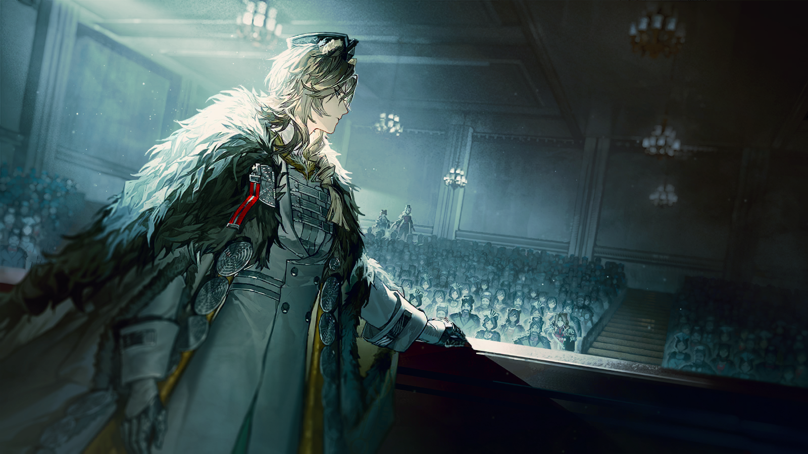
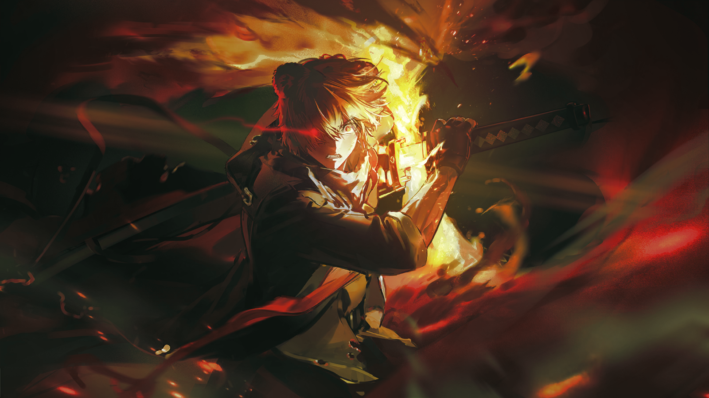
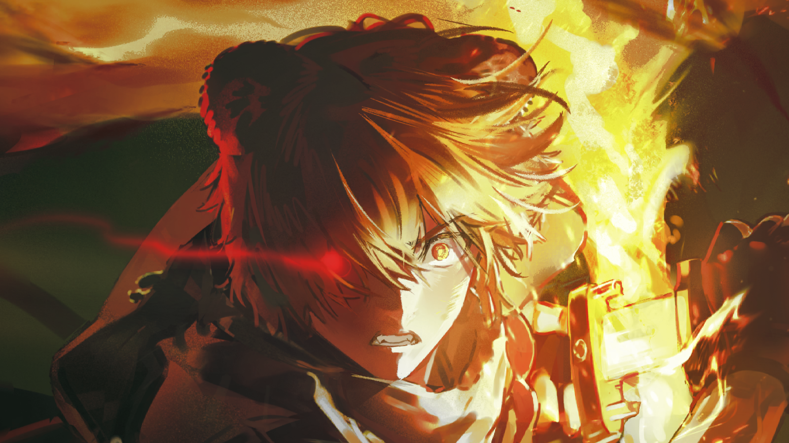
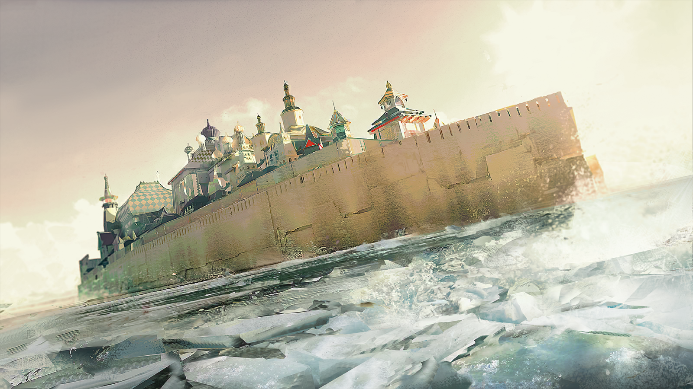
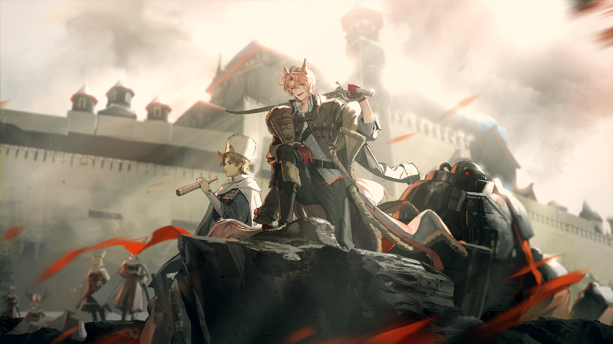

费奥多尔
……维特，什么时候，你也和他们一样，染上了匪徒的习性？
费奥多尔
而且，如果是要让我回到这里，以便能用签字的形式送出斯韦特兰纳想要的任何东西……

费奥多尔
也大可不必这么大费周章。按现在的情况，我在任何地方都能签下那些东西，甚至都不用花心思去换上件更得体的衣服。

维特
陛下，我们必须先将您从整合运动的控制下解救出来。

费奥多尔
这都可以通过协商和适当的威慑来达成，而不是通过一场彻底的、血腥的背叛。

费奥多尔
你知道我有多么厌恶这样。

维特
可世事并不尽如人意，陛下。

费奥多尔
……

费奥多尔
算了。既然事情已经发生，不如想想怎么减轻影响。
费奥多尔
城里的其他整合运动呢？
维特
您知道，整合运动比第一集团军先一步进入圣骏堡。他们接手的那些工厂和仓库，也是需要被夺回来的目标之一。
维特
在这个过程中，如果无法实现和平交接，那么，伤亡不可避免。
费奥多尔
让斯韦特兰纳停手。

维特
陛下？
费奥多尔
趁他们还没完全失去理智——趁事情还没发展成“大规模屠杀”，我还能让双方重新坐下来谈判。
费奥多尔
我不会因为斯韦特兰纳的冒进就违背对她的许诺，也不会放弃与整合运动在此前达成的共识。
费奥多尔
维特，我们必须停战了。乌萨斯再无法承受另一场这样烈度的战争。

维特
可是，陛下，他们的领袖，那位“图林”……已经被逮捕了。

费奥多尔
……什么时候发生的事？
维特
这是与解救您的计划同时定下的安排。

维特
那位领袖拒绝了我们投去的橄榄枝。可这些感染者想要的，从来不只是几座移动城市。
费奥多尔
你是想说，他们打算占据圣骏堡，把首都也变成他们的地盘。
维特
我们已经忍让到了最后一步，当他们坚持继续维持武装，且开始不安分地抢夺物资时，就已经与我们最初的合作背道而驰了。
维特
而且，您或许还不知道，在圣骏堡此前的乱局之中，有许多手握大量产业和资源的贵族被杀……
维特
而整合运动同样坦然地“接收”了这些人的遗产。
维特
陛下，您所怜悯的这些人，会动摇这个国家的根基。
费奥多尔
你只需要回答我，他们有多少人？
维特
他们打败了第四集团军。整合运动的实力不容小觑。

费奥多尔
那是在第五集团军第二师团，以及我的中央集团军第九师团的帮助下达成的胜利。
费奥多尔
我再问一遍，进入圣骏堡的整合运动，一共有多少人？
维特
……他们不仅拒绝解除武装，还控制了城中数量众多的工人。他们在城中展现出了强大的动员能力，这是一个危险的信号。
费奥多尔
你是说他们接管了市民和工人们自发筑起的街垒，是吗？如果筑起街垒就能控制整座城市，那想必圣骏堡已经在历史上陷落无数次。
费奥多尔
而假使他们真的想夺取圣骏堡，最该抢的应该是首都卫戍军团的兵营、炮台和各地块的交通枢纽，而不是工厂和仓库。
费奥多尔
他们到底是在准备接管这座城市，还是在想办法活下来？
维特
……
费奥多尔
维特，你知道。你明明就知道，那些工厂一旦直接落入斯韦特兰纳手中，他们就连谈判的资格都没有了。
费奥多尔
你刚才说他们拒绝解除武装，可如果他们真的解除了武装，第一集团军会放过他们吗？

费奥多尔
从现在的事实来看，整合运动的判断，一点错也没有。
费奥多尔
所以，他们究竟是“要得太多”，还是因为知道自己手中一无所有，才不得不抓住眼前仅有的东西？

维特
陛下……
费奥多尔
呵……多么熟悉的境况啊。
维特
陛下，您必须知道，我们已经不打算与整合运动谈判了。
费奥多尔
“我们”？
费奥多尔
为什么现在是我要天然地站在第一集团军那边，去作为他们的工具发挥作用，而不是像一个真正的皇帝那样，主动寻求更好的结果？
费奥多尔
而且，你到底为什么一直在为他们解释？你更应该站在我的身边，不是吗？
维特
因为在您还被整合运动所控制的时候，我已经为您，同第一集团军达成了协议。

费奥多尔
……什么协议？
维特
他们会拥护您重新登上皇位，而您必须在第一集团军的支持下尽快重建中央政府，并且承认他们对乌萨斯整体防务和地方行政的控制。
费奥多尔
……
费奥多尔
你，答应了？
维特
是。
费奥多尔猛地转身。回到这里之后，他第一次看向维特的眼睛，周围原本熟悉的布景，也第一次令他感到如此陌生。
又或者令他感到陌生的，只是眼前这个人。
费奥多尔
你凭什么——凭什么替我答应？！

维特
因为这是他们能够接受的唯一条件。
费奥多尔
所以，我其实不需要在这里，因为你们做出的一切决定都可以绕过我！
维特
至少这样，他们不会杀您。
费奥多尔
闭嘴。
维特
女大公要您的命，而斯韦特兰纳拒绝了她。现在，第一集团军已经收复了半个萨列夫格勒区。这就是为什么我们必须——
费奥多尔
闭嘴！！！
维特
……
费奥多尔
所以，你想要的只是让我回到那张椅子上，然后什么也不做，等待第一集团军奉上胜利，就像一个摆设那样？
费奥多尔
……我难道真的只是玻璃堡垒里那些脆弱的锡兵，除了观赏，再无任何价值可言？
维特
陛下，我只是希望您活着。
费奥多尔
不，你只是希望，“皇帝”活着。为此，你甚至可以不在乎他是不是变成了感染者。
维特
——？！
维特
这——不，我去请医生过来——
费奥多尔
在你让人为我换装时，一个年轻的仆从注意到了我脚上的石头。我观察着他的表情……可你猜，他的反应是什么？
维特
陛下，我请求您……
费奥多尔
他没有任何反应，仍旧跪着为我穿上了长靴，系好了系带。
费奥多尔
这意味着他看见了，但不在乎。而这同样也是你对我的态度。
费奥多尔
只要被公认的皇帝还活着，这些人就能用他的名字去号令军队，用他的印玺接管城市，用他的权杖指挥帝国的方向……
费奥多尔
用他的身份去告诉所有人——他们所做的一切，皆为合法。
维特
……您必须相信，我在乎的是您——

费奥多尔
不可能。
费奥多尔
如果你真的在乎我，就应该相信我，相信我还能用我的方式，结束这场战争。
费奥多尔
而如果连你都觉得，我唯一能做的事就是坐在这里让别人借我的名义，去做他们想做的事……
费奥多尔
那么，这大概真的就是“费奥多尔·弗拉基米罗维奇·拉奇萨尔”的所有价值了。
维特
……陛下，请您先冷静一下吧。
费奥多尔
但也许，这确实是我一直避免去思考的方向。
费奥多尔
也许所有人需要的一直都不是我，而只是一个“皇帝”。一个可以被随时拥立，又随时抛弃的，可以被利用的角色。
费奥多尔
那么……
费奥多尔望向那张办公桌之后的座椅。
他想到一间冷清的厅堂，上面有一个更高的、更空荡的座位。它就那样伫立在那里，从乌萨斯的建立，到乌萨斯的——




费奥多尔
（低声）如果这个角色根本就不存在了呢？
费奥多尔
（低声）乌萨斯会不会反而第一次……真正开始属于她自己？
围攻还在持续，但工人们的战线已经有些乱了。
临时堆叠的障碍根本撑不过几轮轰炸，而坚持守在这里的人们，还在不断寻找着用于阻挡的废材，去筑起新的街垒。
工人A
雷尔金！
有个人在远处喊了一声。被喊到名字的人则快速站起，向外望去。他看到两个年轻人，被压在倒塌的旧街垒之后。

尼克托
……你们都别动，我过去！
工人A
当心！
箭矢擦着兜帽飞过。他扑向坍塌的建材，找到那两个勉强将桌椅当作掩体的学生，用力将其中一个从石板下拽起，带到了工人们身边。

工人B
雷尔金，掩体下面还压着一个！

尼克托
我知道，先接着！

工人C
要不让我去吧，雷尔金，你已经两天两夜没合眼了——

尼克托
不，让我去。

尼克托
你们继续去后面找能拿来当掩体的东西，但不要去骚扰还住在里面的那些人。
尼克托
他们大多数都是来不及撤离的老人，不要去抢他们的东西。

工人C
我，我知道！那你当心——
被称为“雷尔金”的青年点了点头，重又冲进交战区中。
当他把另一个人从石板下拉出来之后，原本摇摇欲坠的残垣轰然倒塌，将整片残余的街垒都埋葬在墙面之下。

受惊的学生
我……我——

尼克托
先别说话，跟我走。
尼克托
来，靠在我背上。
烟尘之中，他没有停下动作，而是趁机背起那个被压断了腿的学生，往后爬了回去。
当他们回到街垒后方，新一轮的攻击，又开始了。

受惊的学生
谢谢——谢谢你！
受惊的学生
他们说你是雷尔金，是不是？就是提出“矿区互联”的那个人。我就是为了见你才加入战斗的！但我从没想过，你会这么瘦弱……
尼克托
……
受惊的学生
可就算这样，你也还是在继续战斗！我应该向你学习，先生！
受惊的学生
刚才，我和我的同伴几乎就想要投降了。我知道，这有些可耻。但经此一役，我已经明白——
尼克托望着自己颤抖的手，耳边的喊杀声和话语声，都逐渐远去了。
他定定地望着那双手，而后抬起来，拍在了眼前年轻人的肩膀上。

受惊的学生
——嗯？
尼克托
你们不需要学我，每个人……都有自己不同的位置。并不是所有人都是天生的战士。
受惊的学生
可是，雷尔金先生——
打断了一切的，是一具黑色的人形。它从逐渐消散的烟尘中“走”了出来。

？？？
……
说“走”并不准确。
因为前方并没有任何的脚步声出现。那些黑暗中放出的冷箭，似乎也凭空被这黑色扭曲，而后消解掉了。
在街垒后，有人认出了那东西。惊恐使他立刻喊了出来——

受惊的学生
内卫——？！

工人B
该死，是内卫！

受惊的学生
不是说内卫都死了吗？为了保护皇帝——内卫应该都已经死了啊！
工人B
怎么办，雷尔金？
？？？
嘶……
那盔甲的手部，逐渐从黑色中演变出一柄武器的形状。
从弩箭，到矿镐，再到锋利的钉锤，最后定格在，一柄漆黑的利刃上。
而后，那利刃在空中只划过一闪——
巷口那些不断射来的箭矢被尽数斩落在地。
工人A
……他没有攻击我们？

工人A
为什么？难道他是在帮我们吗？
工人A
雷尔金？

尼克托
……
青年已经无暇回答，他只能死死地盯住那个黑色的身影。
似乎刚才的某一瞬间，在身旁人唤出那个名字的同一瞬间，他从那漆黑的盔甲之下，瞥见一些不可能再见的东西。
理智使他拒绝相信，他却也不敢让眼睛移开分毫。
尼克托
雷尔金……
他看见，他的确看见。从那流淌着的、扭曲的黑色中看见——
看见那个他并未亲眼目睹的、年轻的、桀骜的、浑身是血站在乌卡边境森林里的士兵。
看见那个他曾亲眼目睹的、疲倦的、眼神里却遮不住愤怒的、站在苔原和岗哨之上的领袖。
他看见那个人。
那个——那个曾出现在每一次冲锋的前列、每一场抗争的中心……
和每一个畏怯的噩梦里的人。

？？？
……“雷尔金”……
？？？
是谁？

战争术师
你以为，你预示着毁灭。
战争术师
可你却不过是毁灭的一道注脚。
战争术师
我们很乐意，终结一条可悲的血脉。
漆黑的衣甲为虚无勾勒出形状。塔露拉听过他们的故事——帝国在折磨的深渊中杀死，又重新催生出来的怪物，精通法术的战争机器。

塔露拉
可悲？就像你们的命运？
战争术师
（古老的乌萨斯方言）“石上之火，无处可燃——”
她横剑劈去，一层无形壁障忽然横亘在她四周，劲力被吸进什么都看不见的深处，像划开了无底的水。
四周的空间正在扭曲，即使是注入术法的剑，也阻止不了发生在面前的事……她的脚步从未如此沉重。
战争术师
你应当学会沉默，德拉克。
战争术师
（古老的乌萨斯方言）“睁开双眼，踏入捕食龙种的罗网。”
战争术师
（古老的乌萨斯方言）“由此我允许你，得以直视死亡。”

塔露拉
呃——
猛烈的能量扑向塔露拉，但德拉克的身躯，却没像战争术师们所预想的那般四分五裂。
几乎在那股能量触碰到她的瞬间，她周身的空间朝反方向卷曲、撕扯，像是一头无形的野兽，撕咬着黑红色的幕布。
她的右膝磕在了地上，左手撑地，指缝里渗出血来。
战争术师
……垂死挣扎。
他向前了一寸。
忽然，火焰窜上他的面罩，他连忙用右手拍打，勉强扑灭了火。
战争术师
——！
战争术师
……天杀的，我会把你碾成烂泥！

塔露拉
试试看……怪物，试试你们的伎俩还能不能奈何得了我。
塔露拉
别让我……找到下一个机会！
空气变得燥热，战争术师们看着自己生成的术法领域，被无形的火焰蚕食、吞没，空间正在破出口子。
他们快速吟颂着新的咒语，不断填补着被烧出的空隙。
战争术师
虚张声势！你这个残疾的猎物，我们有无数种围猎的手段！
战争术师
矿石病每分每秒都在掠夺你的躯体，你又能嚣张到何时？
战争术师
啊——

拉夫连
就是这样，给我*乌萨斯粗口*把所有弹药都打出去！让所有炮兵都瞄准这里！

第五集团军军官
少将，我们会误伤——
拉夫连
服从命令！不要给战争术师喘息的时间！
战争术师
……蠢货！叛徒！
战争术师
这点雕虫小技，不过是在给你们的死亡奏响礼炮！

拉夫连
到底是谁在背叛，懦夫！
拉夫连
是你们第一集团军，先一步侮辱了乌萨斯的军人！
他举起便携的源石榴弹筒，与自己的部下一同朝着对方齐射。
然而，所有的进攻，只是让战争术师微微晃动。
战争术师
够了，叛徒——
战争术师
（古老的乌萨斯方言）“我会将你们的头骨，赐给苔藓与蛆虫！”
拉夫连
……该死。
战争术师纷纷看向了他，他明白，或许到了自己年轻时幻想过的结局。
战争术师
呃啊——

塔露拉
警告过你，怪物。
塔露拉
别让我找到，下一个机会……哪怕是一瞬间。
她割开了影子，割开了囚禁灵魂的深渊。黑雾在她眼前消散，凶戾的异类只剩下了两头。
战争术师
下贱的龙种！
战争术师
（古老的乌萨斯方言）“让你肮脏的躯壳——”
念到半句，灼热感顿时充盈在他残破的胸腔与咽喉。
接着，熊熊燃烧的黑影，径直摔落在地面。

塔露拉
第二次警告。
战争术师
你——
塔露拉
第三次。
塔露拉
乌萨斯剥开了你们的肌肤，亵渎了你们的灵魂，而你们却为自己扭曲的意志与价值沾沾自喜。
塔露拉
我只为终结不义而来，但如果，有人甘当施暴者双手的延伸——
塔露拉
我不介意将你们彻底割除！
咒语构筑的空间，碎成漫天的光屑。
热浪从裂口中喷发，顷刻化为燎原的烈火。
三具尸骨，三个幻影，正随着燃烧，而从众人的眼前散去。
拉夫连顿时跪倒在地上，大口喘着粗气。
塔露拉
……还好吗，少将？
她伸出了左手。

拉夫连
……还好。

拉夫连
呵——没想到有一天，我会被一个少了一只手的人拉起来。

塔露拉
第一集团军在向这里集结……后悔的话，或许还来得及——

拉夫连
你知道，我已经选好了下场。

塔露拉
……
拉夫连
抱歉，我的队伍已经精疲力竭了，补给消耗得也很快，不知道还能帮上多少忙。
塔露拉
不必说这种会让我惭愧的话，拉夫连。
塔露拉
整合运动会与你们并肩作战。
塔露拉
直到最后……
她搀住站不稳的拉夫连，望向远处。几公里外，一支铁流，缓缓而来。
乌萨斯的第一集团军，帝国旧日的荣耀——他们乌黑的炮口，正对着自己。

积极的工人
嘿——
积极的工人
搞定了，都搞定了，从这个门往里走就是库房了。

整合运动战士
谢了，兄弟。
整合运动战士
如果工会的统计无误，这里的源石足够补充我们一周的燃料了。

积极的工人
*乌萨斯粗口*那帮老爷平时把这些东西锁得跟什么不得了的宝贝一样……
整合运动战士
哈哈，至少现在，全都是咱们自己的！

雷德
……
整合运动战士
怎么了，雷德？你又在想东想西了？
雷德
太安静了。
整合运动战士
嗯？
雷德
“图林”迟迟没有联系我们。
雷德
如果他们的谈判顺利，那么应该已经对剩下的残兵动手了，街上应该到处都能听到战斗的动静。但现在……连半点风声都没有。
他缓缓将刀柄推开半寸，刀鞘缝隙中，隐隐透出一抹暗红色的微光。
雷德
把扳手、箱子都放下。所有人，拿好武器——
雷德
……第一集团军！

第一集团军军官
在场的所有感染者，放下武器，交出你们藏匿的物资，接受我们的检查。
第一集团军军官
你们的领袖已经决定接受集团军的整编，不要反抗。
雷德
（小声）放屁……
整合运动战士
呃——
白磷弹与手雷向他们砸来，流淌的火焰与浓烟充斥了整个车间。
第一集团军军官
……我不会等你们回答，感染者。
第一集团军军官
最后一次机会——放下武器！
雷德
*极端的乌萨斯粗口*……
整合运动战士
拼了，雷德！
整合运动战士
米拉娜不可能接受整编……只能是这些天杀的杂碎背叛了整合运动……他们现在，只想诱杀我们！

积极的工人
对……我们拼了！
积极的工人
……啊？雷德？
雷德一把揪住他的领口，将他重重甩向车间后方的排污维修井。
雷德
排污管道。弑君者说过工厂地块的排污管道都直通外环下水道，但一次只能爬过去一个人，算是个备用计划。
雷德
你是圣骏堡的老工人，应该比我们更了解地下的结构。现在，所有工人都跟他离开，回到街垒防守……
雷德
雷德小队成员，留下。
整合运动战士
……好！
积极的工人
你不能剥夺我复仇的机会，该死的雷德！
雷德
你们这几条命，换成集团军的弹坑，算什么复仇。
雷德
听着，你们要活着爬出去，告诉街垒、告诉整合运动的人做好准备……你们一起，把这个吃人的地方拆成废铁。
雷德
走吧，记住现在，记住我们——
雷德
为所有人……也为我复仇！
摔在维修井边的工人，还挣扎着想往回爬，几名工友拽住他的手臂，才勉强拉住了他。
目送着越来越多的背影融入黑暗，雷德收回了视线，朝着小队成员挥了挥手。
这是一种信号……没有昂扬的煽动，没有绝望的颓唐。
战士们只是从残垣后探出半个身子，朝着对面钢铁般的阵列扣动了扳机。
然而，在重炮之下，一切还击只是投入深渊中的石子……
有人开始倒下，但没有人选择回头。
直到最后一个工人走进逃生的区域，雷德一把拉下沉重的液压制动阀，数吨重的闸门带着刺耳的摩擦声向下坠落。
铁门闭合的最后一瞬，雷德没有回头，只是将长刀又多抽出了半寸。
第一集团军军官
有趣的选择……即便没有任何重武器，也没让你们丢了胆量。很好——
第一集团军军官
特种连全体成员，格杀源石精炼第三工厂的所有叛徒！
十数名盾卫的重型盾牌，在地上刮擦出刺耳的尖鸣。
雷德
如果这就是最后的战斗，那么……
第一集团军军官
弩手小队，展开阵型。
雷德
乌萨斯帝国，我会让你见识到——
第一集团军军官
预备——放！
雷德
一名真正的“复仇者”！
赤红的烈焰席卷了周遭的空气。

长刀在空中挥出半圆弧光，将袭来的弩箭硬生生斩断。
尘埃裹挟着火星，在半空中散落。
强风吹过，扯落了他的帽子，露出了他尚且年轻的脸颊。
雷德
喝！
第一集团军军官
继续射击，不要让他靠近盾卫方阵！
还在装填的间隙，火焰已经吞噬了盾牌，刀尖借着前冲的惯性，沿着盔甲的缝隙贯入其中。
鲜血喷溅在滚烫的刀刃上，化作哧哧作响的水汽。
几乎是在同时，一柄战锤击中了他的肩膀。他只是咬着牙，右手挥起长刀顺势回旋，刀刃带着焦灼的火舌，割开了左侧敌人的胸甲。
然后，新的敌人又围了上来……直到最后，雷德都数不清他究竟挥舞了多少次长刀。
但他记得每一道伤口，记得那些钻心的瞬间——刺刀的贯穿、炸药的烧灼、钝器击碎骨骼的时刻、矿石病发作的苦楚……
每一次鲜血的流淌，每一次肉体的濒死，都让他一点一点，攥紧了手中的刀柄。
直到，他看见敌人眼中的恐惧，他从这种恐惧中确认了自己。

乌萨斯的“红刀”，帝国的……“复仇者”。
……
集团军军人的声音
死、死了吗？
温热的刀尖触了触雷德的肩膀，本该传来疼痛的地方，却不再会有疼痛。
他想到这里，带有结晶的地方仿佛也变得轻盈，嘴角不由得勾起一阵笑意。
集团军军人的声音
远离他！
雷德
嘁，懦夫。
这算，做到了吗……复仇者？
他不会知道了。
就像，他也不会知道，这片大地是否还有他的容身之所，是否还有牵挂与思念他的人。
但有一天，所有乌萨斯人都会知道。
他站立在焦土与明天之间，未退一步。
战场一角，一道模糊的身影在移动城市的仓储出口闪现，又立刻隐没在烟雾之中。

弑君者
（塔露拉……）
弑君者
（你最好是还活着！）
在无差别的连续炮轰下，零散的整合运动战士正一边寻找着还能躲避轰炸的防御工事，一边与第一集团军的步兵短兵相接。
一个整合运动战士被弩箭射中，接连后退就要倒在地上时——

弑君者
蹲下，低头！
烟尘四起，弑君者闪身掠过，用地上捡来的兵刃挡开接连射来的弩箭，又顺手将人带离了原地。
整合运动战士
你、你是——

弑君者
你是整合运动的。告诉我，塔露拉现在在哪片战场，哪个方向？

拉夫连
他们集结的速度比我预想的要快，不愧是第一集团军……
塔露拉
拉夫连，你们手中还有多少弹药和箭矢？
拉夫连
不是军需官的准确统计，只是根据经验估算，最多只能支撑有效反击持续半天。

塔露拉
我们打掉了战争术师，能争取一定时间，而且在已有防御工事的掩护下，他们的远程轰炸精度不会太高。
塔露拉
但在第一集团军的步兵营配合百战先锋重新铺开到整片战场上之前，我们必须尽快往移动城市入口推进——
弑君者
——趴下！
塔露拉
咳——咳咳！

弑君者
很好，你没死。

塔露拉
柳德米拉？

塔露拉
你怎么会在这里？第一集团军翻脸了，我需要知道圣骏堡里面的情况，我看到了九的——
弑君者
这就是我来这里要告诉你的。塔露拉，听我说。
弑君者
第一集团军逮捕了米拉娜，九在据点反击战中生死不明，我离开圣骏堡之前，雷德他们还在和工人们一道守着工厂。

塔露拉
什么？

弑君者
不要做出这样的表情，塔露拉。我带出消息，是为了让你知道，我们还没有输。
弑君者
来找你的路上，我已经大概摸清了这里的情况。
弑君者
现在，我可以帮你继续拖住这里的第一集团军。塔露拉，你要想办法进城，去救米拉娜，去找到九——
远处，涅瓦湖的水面在震动。
起初只是湖心荡开了一圈圈不合时宜的涟漪，而后，是更远的地方传来一阵沉闷的轰响，仿佛有巨人正穿越水底，朝圣骏堡的方向游来。
这震动，直直传导到众人脚下的地面上。集团军的炮火仍在不断越过湖岸，砸进塔露拉等人所在的阵地。
炮弹炸响，掀起泥土、掀起碎石，火光则在早已烧黑的树林间连缀成一片——
所有的所有，都抵不过那庞然大物以一种不可阻挡的方式靠近的声响。

拉夫连
……那是……
拉夫连
一座移动城市？

弑君者
什么？
塔露拉
移动城市怎么能走水路？那是涅瓦湖的方向！
塔露拉
它直接破开了第一集团军和我们之间的部分防线——它就是冲着战场来的！

是的，阻挡了第一集团军炮火的，是一整座破开湖面而来的移动城市。
巨大的钢铁结构破水而来，撞开涅瓦湖上早春的浮冰，也撞开湖心高昂的浪涛。
旧式塔楼、圆顶、烟囱与炮台一层层从水雾和炮火中升起，颜色斑驳的外墙被日光照亮，没有标志的旗帜，在风中猎猎作响。
就是这样一座造型古朴的移动城市，毫无征兆，接近笔直地切入了战场。
它冲向圣骏堡的方向，丝毫看不出有任何要减速的迹象，直到——
轰——！
移动城市庞大的身躯，在撞上浅滩之后的防御工事之前，终于开始减速。

斯乔帕
奥列格，你说要带我看个东西，结果——你们到底从哪儿搞出来这么个——

奥列格
会游泳的城市，即使是你也没见过吧。
斯乔帕
……真想让西尔卡他们也看看。
斯乔帕
说真的，你们是去哪儿弄来的这东西？

奥列格
它自己从水里浮上来的。

斯乔帕
在哪儿？我再去等几座，咱们凑齐一支舰队的规模，回去杀那个老东西叶甫根尼。

奥列格
我是认真的，没开玩笑。它就是自己从安加拉湖里浮起来了。
奥列格
一开始，上面还有不少死人，没人敢靠近。咱们过来之后把尸体都收拾下葬了，拆了装，装了拆，再慢慢把它从废铁改造成了这样。
奥列格
当然，关键的东西基本没坏，加上有人帮忙，否则我们也不会这么快。

斯乔帕
要在这么短的时间内修复这个规模的移动城市，肯定不是有人帮忙这么简单。
奥列格
好吧、好吧！是有很多人帮忙。你也看到了，现在，这真正是一座有生气的移动城市了。
城市船型的结构最下方，露出几排巨大的轮舱和推进结构，即使城市已经靠岸，水花还在不断从缝隙里喷涌出来。
而在那些钢铁和木头混杂的构造之间，竟还能隐约看见晾晒的衣服、种着花的木箱，以及有人站在“甲板”上，朝岸边挥手的模样。
恼怒的自由民
——喂，让开些啊！水会把你浇个透的！

开朗的自由民
那就让它把我浇个透吧！
开朗的自由民
浪花越大，说明动力越足——
恼怒的自由民
歪理邪说！

热情的自由民
开饭了，都别在那傻站着了！
热情的自由民
一会儿吃完饭，我们还要上去检修一下排水系统。
开朗的自由民
哦，行！
斯乔帕
……这就是……
斯乔帕
（低声）“泽姆利亚”吗？

奥列格
什么？

斯乔帕
它是我们的泽姆利亚。
奥列格
哦，你说那个。要这么说也没错，不过我听那些游击队的人提起过，这座移动城市叫“塞梦珂”。
奥列格
挺美的，是不是？

斯乔帕
是不错……但你说游击队？
奥列格
是啊，除了要给你看咱们的移动城市，我还想带你见一些人。
奥列格
我觉得你提出的那个计划里，一定会用得上他们。当然，前提是他们还愿意继续战斗。
奥列格
不过我觉得没什么问题就是了。
移动城市没有停下。
水上推进结构逐渐停止的同时，巨大的履带与轮舱咬住泥土，使整座移动城市带着潮湿和泥泞，继续向前推进。
而城墙两侧，则忽然落下一排粗大的绳索。绳梯、木板和临时拼接起的吊索，也被一齐甩向地面。
第一批自由民战士翻过墙来，利索地落地，然后是第二批、第三批……
拉夫连
……哼。
拉夫连
还真让他赶上了。
奥列格
一个一个来！

急躁的自由民战士
掉下来摔了一屁股泥的又不是我！

奥列格
但你刚才要是跳下来能直接砸死他！别犟嘴！
奥列格
后面所有人听着！
奥列格
按维伊吩咐，炮手留下，其余人都下来！
更多自由民从这座突然闯入战场的移动城市里面涌出，沿着它的头部和右侧迅速散开。
他们没有立刻形成整齐的队列，也没有任何司令官去喊着口号给他们重新编组。
有的只是在观察局势之后，主动补上整合运动减员的缺口，或是直接冲向第一集团军在另一侧的步兵阵地。
也有人停下来，从战场上带走伤员。
整合运动战士
呃——
塔露拉
不用慌张。拉夫连说了，他们是来帮忙的。
整合运动战士
好、好！
塔露拉抬头，重新望向这群“不速之客”过来的方向。
在他们身旁，几个黑色的、有些熟悉的身影，正站在浅滩后的一小片高地上。
他们都穿着乌萨斯盾卫的盔甲，手中的武器上，却早已磨去了属于乌萨斯的徽记。
塔露拉
……
那是爱国者的游击队盾卫。

敏锐的自由民战士
——他们又要开炮了！
敏锐的自由民战士
头儿，现在我们可以回击了吗！
斯乔帕
等我——
斯乔帕
先宣布个事！

斯乔帕
喂——那边的敌人们，能听见吗？
奥列格
这个距离，除非你特意用源石技艺，否则不可能听得见。
斯乔帕
能不能听见都无所谓了！就是个仪式感。
斯乔帕
回去告诉你们老大叶甫根尼，现在他可以来找我，斯乔帕·拉辛，报一个多月前炸了他三艘护卫舰，一艘攻击舰的仇了！
奥列格
我看到他们的军旗是第一集团军，不是第四集团军。
斯乔帕
……那也无所谓，都一样！
斯乔帕
听好了，不管你们是第一集团军还是第四集团军，总之——你爷爷我带人回来干架了！
奥列格
唉。
游击队盾卫
……
游击队盾卫
在战场上，不要总是嬉皮笑脸，用这种轻佻的语气。
游击队盾卫
敌方的炮位，已经重新校准了。
游击队盾卫
现在，多数炮位，大概都对准了我们。
斯乔帕
那就按原计划，行动！

罗季昂
……关于整合运动的计划，她有说出什么吗？

特辖局特工
没有。

罗季昂
办法试了吗？
特辖局特工
试过了，您大可看看。
罗季昂转过头，他看到了一位低垂着头、似乎毫无生气的女性。他嗅了嗅气味，一股血腥味直钻他的鼻腔。
特辖局特工
您还有什么吩咐？
罗季昂
……我还需要去看着街垒，这里交给你们了。
罗季昂
注意点，斯韦特兰纳留着她还有用。
特辖局特工
是。
特辖局特工
什么——
爆炸掀掉了地下室的东侧墙壁，尘土灌进走廊，特工还没来得及喊出第二个词，冲进来的人已经把他撞倒。
这些不速之客穿着工人的外套，举着拼凑的武器，声音嘶哑地叫嚷着什么。他们源源不断地涌入走廊里，推搡着，打闹着。
特辖局特工
暴民！给我停下——
一双粗糙的手掐住了他的脖子。旁边有人已经在翻证物柜，把文件胡乱塞进外套，边塞边笑。
而更多人的脚步，都停在了牢门前。

狂热的工人
图林……伊凡·图林……
狂热的工人
这一场火，已经等了您太久了。
米拉娜勉强睁开双眼。她与来者对视，却看见他们乌黑的瞳孔深处，有另一种东西，正借他们的眼睛朝她张望。

矜持的贵族
不必强迫她。
视线模糊……一个雍容的女人走到前方。她的皮肤像年久剥落的墙壁，裂缝在加深，碎屑无声地脱落、散成细尘，消失在阴影里——
等米拉娜再看清时，面前已是一张崭新的面孔。
而随她而来的人，对她身上“发生的事”仿佛浑然不觉，依旧低着自己的头颅。

米拉娜
什么……时候……

卡谢娜
请叫我卡谢娜吧。你或许是第一次听到这个名字，可你早就倾心于我们共同的道路。
卡谢娜
于是，我从未离开过你。

米拉娜
卡德尔……
卡谢娜
一个勇敢的人，可悲而软弱的人，他因被压迫而产生了恨意，却转化不成真正的决心。
卡谢娜
他想把那股炽烈的恨压下去，可率领野兽的使命，偏偏落到了他手上。他从未明白，力量从何而来。
卡谢娜
但你明白，你比他走得更远。
卡谢娜
因为你是如此清楚——加入不到三个月，整合运动的人就会如此相信你，从来不是因为你会讲道理。
卡谢娜
道理是给识字的人看的，识字的人从来不是多数。更多的人跟着愤怒走，跟着火焰走，跟着一个敢于说出“我们受够了”的声音走。
卡谢娜
（悄声）是的，你很清楚，图林也很清楚……
米拉娜
……

卡谢娜
我见过许多不同的反抗者，有人能像你一样愤怒，有人能像你一样隐忍。
卡谢娜
能同时做到这两件事的，只有你。
卡谢娜
你和皇帝谈判，和元帅谈判，和那些会让你跪在脚下的人，和那些你本可以让他们跪在脚下的人，平等、耐心、彬彬有礼地谈判。
卡谢娜
但你会看着费奥多尔，想象着是哪一只手，签下了将矿工推入地狱的传票，又是哪一只手，剥夺了伊凡·图林的生命。
米拉娜
我……
狂热的工人
图林，我们的时间不多了，得趁着第一集团军没反应过来，先离开这里。

卡谢娜
（悄声）是时候了，“图林”，乌萨斯的感染者们需要你的愤怒。
卡谢娜
（悄声）他们是最好的干柴，但他们点燃不了自己……你知道，应该怎么去用。

米拉娜
……

米拉娜
你们来得……比我想象中更晚。
米拉娜
不过……还不算迟。
她撑住墙，站直了身体。
米拉娜
我们一起走，去告诉所有人——伊凡·图林回来了。

米拉娜
他想……让你们记住愤怒，记住这穷人们唯一不被征收的财产……
她往前迈开步子，走廊里的灯光闪烁了一下。

米拉娜
然后，让火烧向琥珀宫，烧向集团军，烧向所有压在我们头上整整一千年的东西。
卡谢娜
那么——就让他们听见你的声音、人民的声音……
卡谢娜
……我们的声音。
慌张的工人
安托沙，图林有消息了！

安托沙
怎么样了？
慌张的工人
他被一伙工人救走了，然后收拢了城里整合运动的残兵，占领了一个工厂，号召大家一起过去，对抗第一集团军和特辖局。
慌张的工人
城里的许多人都跟着他走了。

安托沙
他说什么了吗？
慌张的工人
他……让我们保持愤怒。孱弱的帝国，注定会被更具力量的事物毁灭。

犹豫的工人
安托沙，我们是不是应该先去找图林呢？

安托沙
……慢着。
犹豫的工人
怎么了？万一图林又遭到什么不测，会动摇我们的士气的。

安托沙
图林的书里，从未写过那种话。
安托沙
他说过，帝国会在它自己的结构里崩塌，贵族们亲手给自己打造了绞索。他从未教过人们，所谓“更具力量的事物”。
安托沙
让我们所有人不要妄动，继续守着街垒。我们站在这里，从来不是为了去盲从某一个名字——

安托沙
而是为了那些哪怕没有图林，也依然颠扑不破的真理而战。